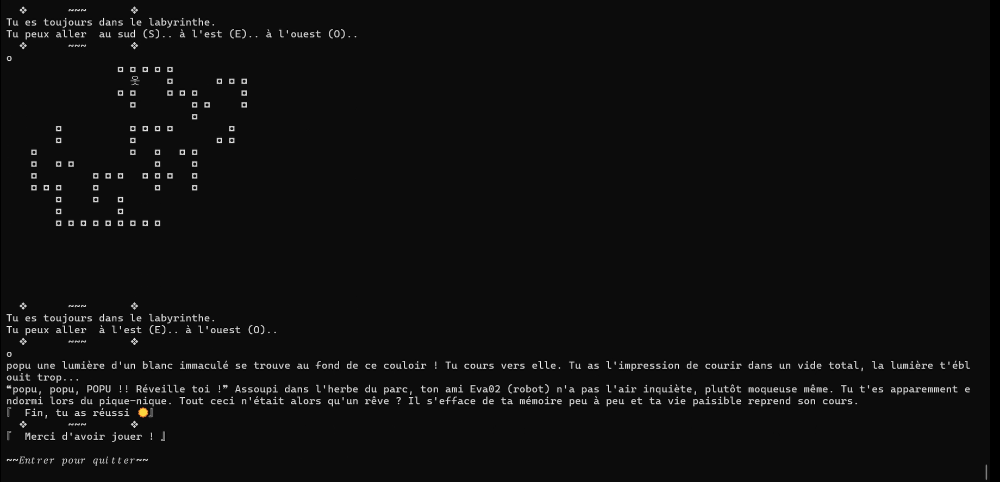
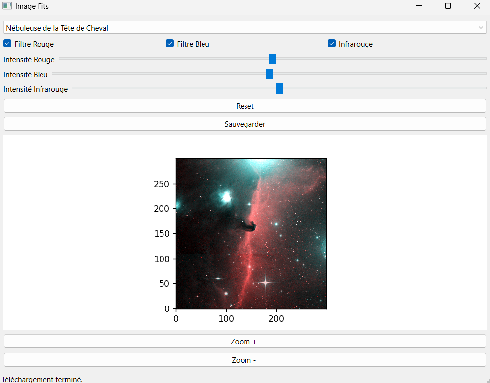
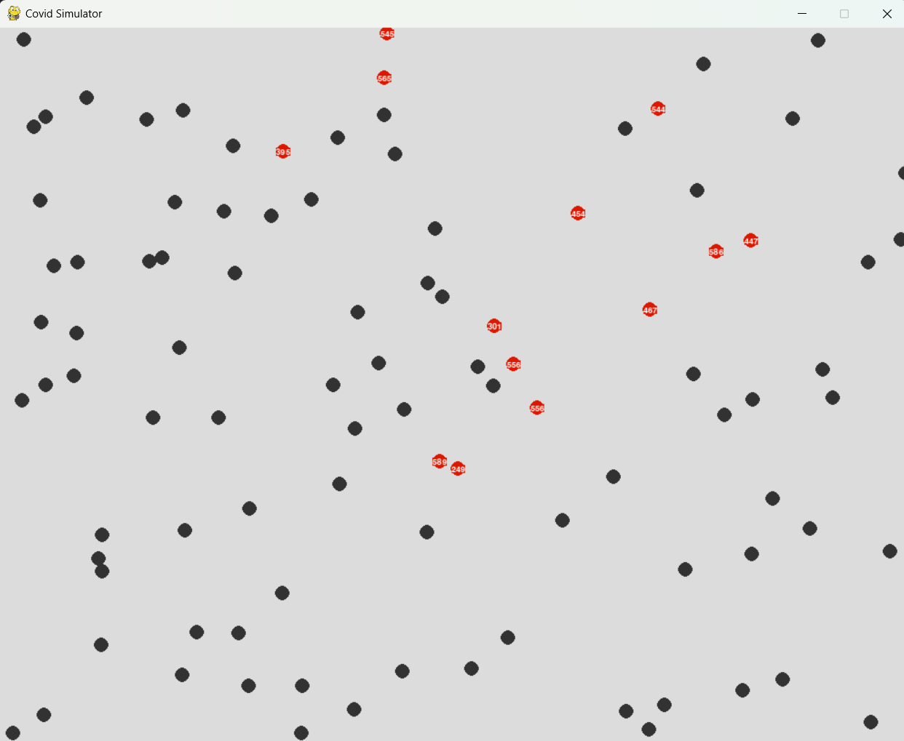
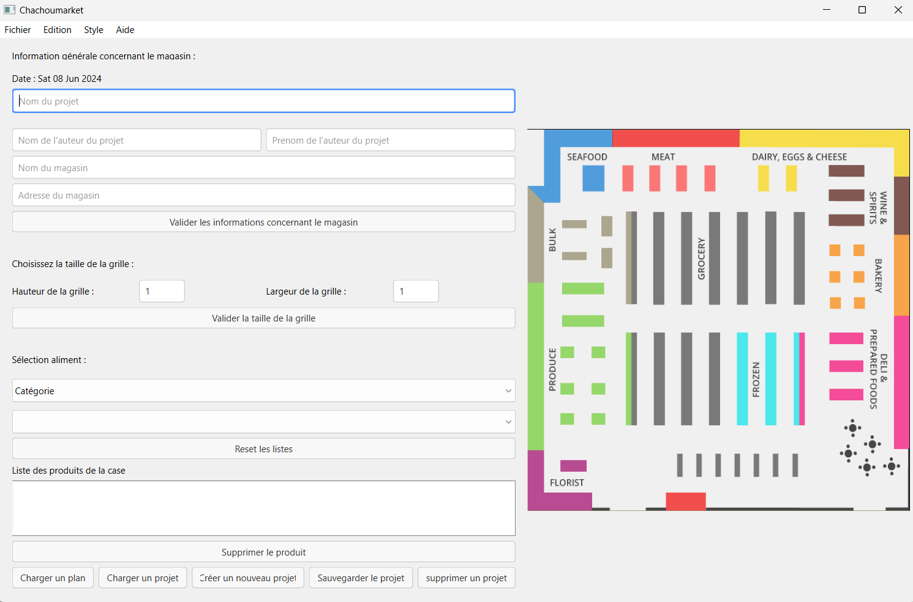
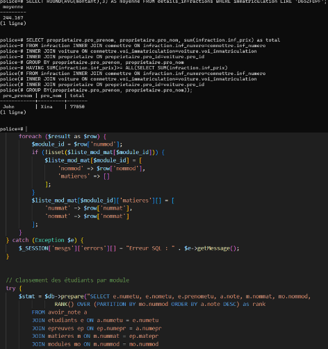
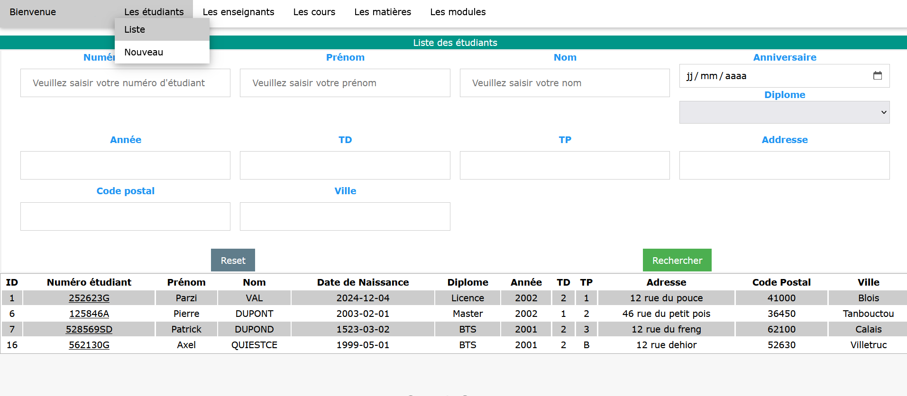

Page Web
Jeux
Application
Développement d’application et programmation
Durant des projets réalisés en cours, j’ai pu développer un grand nombre de compétences dans le développement avec différents langages de programmation. Que ce soit dans le développement d’application, de site internet ou encore de jeu textuel.
Réalisation d’un site Web
- J’ai réalisé ce projet dans le cadre d’une SAE (Situation d’Apprentissage et d’Evaluation), dans une équipe de 5 personnes.
- Ce projet visait à concevoir un site web permettant de découvrir le monde en 5 étapes. Dans le cadre de ce projet, nous avons recueilli des besoins client afin de développer au mieux notre site pour satisfaire le client.

Réalisation d’un jeu vidéo textuel à choix
- L’objectif de ce projet, que j’ai réalisé durant une SAE par binôme, a été de créer un jeu textuel dans lequel le joueur peut progresser en effectuant différents choix durant l’aventure. En fonction des choix de parcours du joueur, l’issue est différente, ce qui permet de pouvoir progresser au fil du temps.
- Nous avons pu mettre en place de nombreuses méthodes de codage afin d’optimiser au mieux notre code. Nous avons également commenté notre code afin qu’il puisse être lu et compris par d’autres développeurs.
Réalisation d’une application de traitement d’images astronomique
- Ce projet a été réalisé par binôme, dans le cadre d’une SAE.
- Durant ce projet, j’ai pu découvrir l’utilisation des fichiers astronomiques FIT et FITS. L’application déployée permet d’afficher des images astronomiques ou d’en empiler différentes les unes sur les autres en ayant la possibilité de modifier les nuances de couleurs (infra-rouge, Rouge, Bleu).
- Notre code comprend deux parties : une partie concernant l’affichage, l’interface utilisateur ; et une autre partie comprend le téléchargement des images, la modification et la superposition des codes des images afin de permettre un affichage spécial.


Optimisation de code
- J’ai réalisé ce projet dans le cadre d’une SAE, j’ai pu optimiser un programme à l’aide de solutions mathématiques et algorithmiques pour le rendre plus fluide et moins exigeant au niveau des ressources utilisées.
Réalisation d’une application IHM
- Lors d’une SAE réalisée en groupe de quatre, l’objectif a été de créer une interface utilisateur pour réduire le temps passé dans un magasin pour un utilisateur et optimiser ses courses.
- Avec un membre du groupe, nous avons développé l’interface utilisateur. Via cette interface, l’utilisateur peut renseigner différentes informations, il peut réaliser sa liste de courses. Les autres membres de l’équipe ont développé la partie permettant l’optimisation d’un chemin afin de proposer le chemin le plus court.


Requête de récupération de données
- Durant les cours, j’ai réalisé différentes requêtes permettant de récupérer des données.
- J’ai dans un premier temps écrit des requêtes en ayant accès directement à une base de données, pour ensuite modifier, supprimer, rechercher les informations correspondantes.
- Dans un second temps, j’ai développé un code en PHP permettant d’accéder à une base de données. Différentes requêtes ont été réalisées dans ce code afin de permettre la gestion de la base de données via une interface web.
Développement d’une interface en PHP
- Durant ce projet, j’ai développé un site en PHP localement sur mon poste à l’aide de WAMP. Ce site répertorie des étudiants, des enseignants, des matières… L’objectif était que, via une interface utilisateur, nous puissions enregistrer des données via des requêtes.
- L’interface visuelle permet donc de créer par exemple un étudiant, de le modifier et de visualiser tout ce qui est présent dans la base de données de manière structurée et organisée.
